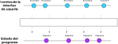
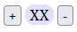
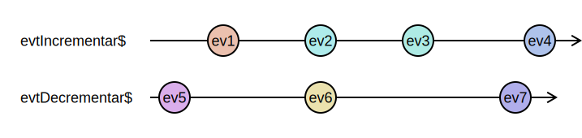
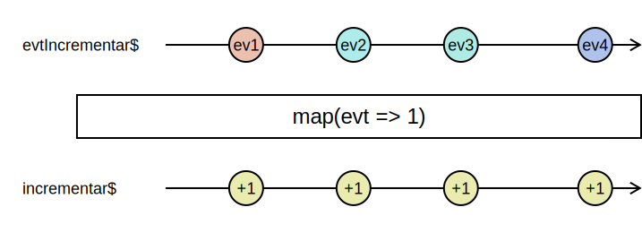
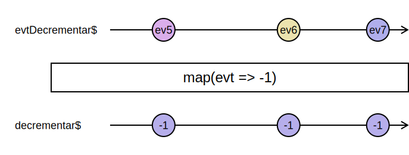
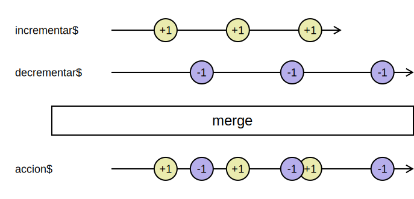
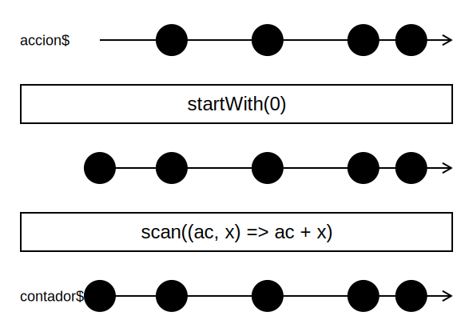
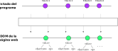
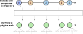
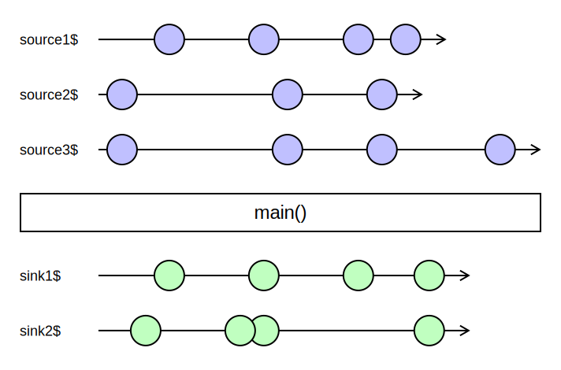

Programación reactiva con Cycle.js
Programación Declarativa Aplicada
Máster en Ingeniería Informática
Facultad de Informática
Universidad Complutense de Madrid
Máster en Ingeniería Informática
Facultad de Informática
Universidad Complutense de Madrid
En la semana anterior
- Presentamos algunos ejemplos sencillos de interfaces de usuario web en el front-end con JavaScript y RxJS.
- Los eventos de la interfaz de usuario se representaban mediante observables.
- A partir de esos observables, construíamos otros observables que representan el estado del programa.
- Por último, nos suscribíamos al observable que define el estado del programa para actualizar la interfaz gráfica.
En la semana anterior

- Ejemplo de partida: contador
- Cycle.js
- El source DOM
- El sink DOM
- Creación del DOM virtual
Ejemplo de partida: contador
Documento HTML
<body>
<button class="incrementar">+</button>
<div class="contador">XX</div>
<button class="decrementar">-</button>
<script src="main.js"></script>
</body>

Ejemplo: contador
- Mediante
fromEvent, obtenemos observables que emiten los eventos de pulsación en cada botón.const incrementarDOM = document.querySelector('.incrementar'); const decrementarDOM = document.querySelector('.decrementar'); const evtIncrementar$ = fromEvent(incrementarDOM, 'click'); const evtDecrementar$ = fromEvent(decrementarDOM, 'click');

Ejemplo: contador
- Vamos a transformar estos eventos en acciones más cercanas a la lógica del contador.
- Cada pulsación del botón
+se traduce a la acción+1. - Cada pulsación del botón
-se traduce a la acción-1.
const incrementar$ = evtIncrementar$.pipe(map(evt => 1));
const decrementar$ = evtDecrementar$.pipe(map(evt => -1));
Ejemplo: contador


Ejemplo: contador
- Nuestro observable de acciones se obtiene mezclando los dos anteriores:
const accion$ = merge(incrementar$, decrementar$);

Ejemplo: contador
- A partir del observable de acciones podemos construir el observable que define el estado actual del programa:
const contador$ = accion$.pipe( startWith(0), scan((ac, comando) => ac + comando) );
Ejemplo: contador

Ejemplo: contador
- Por último, nos suscribimos a los cambios de estado del observable
contador$para actualizar la interfaz:
const contadorDOM = document.querySelector('.contador');
// Cada vez que cambia el contador, actualizamos su valor en el DOM.
contador$.subscribe(contador => contadorDOM.innerHTML = contador);
// Cada vez que cambia el contador, comprobamos si hemos de deshabilitar o
// habilitar el botón de decremento.
contador$.subscribe(contador => decrementarDOM.disabled = (contador === 0));
Problemas
Problemas de la actualización de la interfaz de usuario:
- No todo cambio de estado necesita actualizar la interfaz.
Por ejemplo, no es necesario cambiar siempre la propiedad
disableddel botón-. - La actualización de la interfaz puede ser mucho más compleja que la de los ejemplos vistos ahora.
Por ejemplo, si tenemos que visualizar una tabla a partir del contenido de un array.
Alternativa
- Podemos indicar, de una manera más declarativa, cómo actualizar la interfaz.
- Para ello, definimos un observable que emita el estado del DOM a lo largo del tiempo de ejecución del programa.

Ejemplo: contador
- En nuestro ejemplo:

Ejemplo: contador
const DOM$ = contador$.pipe(
map(contador =>
<div>
<button class="incrementar">+</button>
<div class="contador">{contador}</div>
<button class="decrementar" disabled={contador === 0}>-</button>
</div>
)
);
¡Ojo! No es código real.
¿Y qué ganamos con esto?
- Podemos subscribirnos al observable
DOM$para actualizar la interfaz. - Cada vez que ese observable emite un valor, comparamos el DOM emitido con el DOM actualmente existente, y actualizamos solamente las partes del DOM que hayan cambiado.
Existen bibliotecas que hacen todo esto 🥳
Cycle.js
Cycle.js

- Framework para desarrollo de aplicaciones reactivas en el front-end.
- Instalación mediante
npm:npm install @cycle/run @cycle/dom
Idea general
- En Cycle.js una aplicación es una función
main()que recibe uno o varios observables (sources) y devuelve uno o varios observables (sinks).
function main(sources) {
const sinks = { .... }; // Definir 'sinks' a partir de 'sources'
return sinks;
}
Idea general

¿Qué son los sinks?
- Observables con información que nuestro programa emite al «mundo exterior»
- Por ejemplo:
- El DOM de la página web
- Peticiones que queramos hacer al back-end de nuestra aplicación web
- Peticiones a APIs externas
¿Qué son los sources?
- Observables con información que nuestro programa recibe del «mundo exterior»
- Por ejemplo:
- Eventos de la interfaz (esto es, del DOM)
- Información que recibimos del back-end de nuestra aplicación
- Respuestas de APIs externas
¿Y cuál es el papel de Cycle.js?
- Implementa una serie de drivers, que se suscriben a los sinks emitidos por la aplicación para realizar las acciones imperativas que sean oportunas:
- Actualización del DOM de la página web
- Envío de peticiones al servidor
- Los drivers también transforman los eventos del exterior en observables, que son los sources de nuestra aplicación.
Cycle.js + RxJS
- Cycle.js necesita apoyarse en una biblioteca de observables.
- Por defecto, se basa en xstream, una biblioteca específica para Cycle.js.
- No obstante, es posible combinar Cycle.js con otras bibliotecas, tales como RxJS.
Adaptador RxJS
Fichero: rxjs-adapter.js
import { setAdapt } from '@cycle/run/lib/adapt';
import { Subject } from 'rxjs';
setAdapt(xstr => {
const result = new Subject();
xstr.addListener({
next: i => result.next(i),
error: err => result.error(err),
complete: () => result.complete(),
});
return result;
});
- Invoca a la función
setAdaptde Cycle.js, que recibe una función que convierte observables de xstream en observables de RxJS.
Adaptador RxJS
- Podemos incorporar el adaptador en nuestro proyecto importando el fichero
rxjs-adapter.jsdesde nuestra aplicación:import './rxjs-adapter.js'
Implementación del contador
Partimos del siguiente documento HTML:
<!DOCTYPE html>
<html>
<head>
<title>Contador con incremento y decremento</title>
<meta charset="utf8">
<link rel="stylesheet" href="index.css"/>
</head>
<body>
<div id="app"></div>
<script src="main.js"></script>
</body>
</html>
<div> contendrá el DOM generado por nuestra aplicación.
Implementación del contador
- Una aplicación es una función que transforma sources en sinks:
function main(sources) { Recibe sources // ... return ...; Devuelve sinks }
La función run() de Cycle.js
- La función
run()de Cycle.js es la encargada conectar estos sources y sinks con los drivers correspondientes:import { run } from '@cycle/run' import { makeDOMDriver } from '@cycle/dom' function main(sources) { ... } run(main, { DOM: makeDOMDriver('#app') }); - El driver devuelto por
makeDOMDriverse encarga de:- Conectar los eventos del
<div id="app">del documento HTML con los sources que recibemain. - Renderizar el DOM devuelto por
main()y colocarlo dentro del<div id="app">.
- Conectar los eventos del
El source DOM
El parámetro sources
- Es un objeto que contiene un atributo
DOM, de la claseDOMSource, que representa el elemento raíz del driver.- En nuestro caso, el elemento raíz es
<div id="app">.
- En nuestro caso, el elemento raíz es
- La clase
DOMSourcetiene dos métodos:select(selector)
Devuelve otro objeto DOMSource con los hijos dethisque encajen con selector pasado como parámetro.events(tipoEvento, opciones)
Devuelve un observable con los eventos del tipo pasado como parámetro que se producen en el elemento del DOM representado porthis.
Sintaxis de selectores HTML
- Similar a los selectores que se utilizan en CSS.
- Ejemplos:
div
Encaja con todos los elementos<div>.div.myclass
Encaja con todos los elementos<div>que tengan la clasemyclass.
Sintaxis de selectores HTML
- Más ejemplos de selectores:
.myclass
Encaja con todos los elementos que tengan la clasemyclass.#myid
Encaja con el elemento que tengamyidcomo identificador.p#myid
Encaja con el elemento<p>que tengamyidcomo identificador.
Sintaxis de selectores HTML
- Más ejemplos de selectores:
input[type='text']
Encaja con todos los elementos<input>que tengan el atributotypecon el valortext.
- Más información: CSS Selectors
Ejemplo: contador
function run(sources) {
const evtIncrementar$ =
sources.DOM.select('button.incrementar').events('click');
const evtDecrementar$ =
sources.DOM.select('button.decrementar').events('click');
// ...
}
evtIncrementar$es un observable que emite los eventos producidos por los clicks elementos<button>de la claseincrementar.- Similarmente con
evtDecrementar$.
Ejemplo: contador
- Al igual que antes, transformamos los eventos en acciones más cercanas a la lógica del contador:
const incrementar$ = evtIncrementar$.pipe(map(evt => +1)); const decrementar$ = evtDecrementar$.pipe(map(evt => -1)); const accion$ = merge(incrementar$, decrementar$); - Definimos un observable
contador$que emitirá los valores del contador:const contador$ = accion$.pipe( startWith(0), scan((ac, x) => ac + x) );
El sink DOM
El sink DOM
- Tenemos un único sink, llamado
DOM, que contendrá un observable que emite el DOM correspondiente a la interfaz:function main(sources) { ... const dom$ = contador$.pipe( map(contador => /* construir DOM virtual a partir del valor actual del contador */) ); return { DOM: dom$ }; }
Ejemplo: contador
- En nuestro caso:
import { makeDOMDriver, h } from '@cycle/dom'function main(sources) { ... const dom$ = contador$.pipe( map(contador => h('div', {}, [ h('button.incrementar', {}, '+'), h('div.contador', {}, contador.toString()), h('button.decrementar', { attrs: { disabled: contador === 0 } }, '-') ]) ) ); return { DOM: dom$ }; }
El DOM es virtual
- Los árboles DOM creados por la función
h()no contienen nodos DOM reales, sino nodos virtuales. - El DOM virtual se crea en memoria, y sirve para poder realizar rápidamente comparaciones entre el estado actual de la interfaz y el estado anterior.
- Es Cycle.js (a través de la biblioteca Snabbdom) quien se encarga de actualizar el DOM «real» del documento HTML a partir de las diferencias entre este último y el DOM virtual.
La función h()
h(selector, opciones, contenido)
- Sirve para crear un nodo DOM virtual.
- El
selectorindica la etiqueta del nodo a crear y, si procede, su clase e identificador. - El
contenidopuede ser una cadena de texto o una lista.
Ejemplos
h('div', {}, 'Hola')
<div>Hola</div>
h('div.myclass', {}, 'Hola')
<div class="myclass">Hola</div>
h('div#principal', {}, 'Hola')
<div id="principal">Hola</div>
h('div#principal', {},
['Hola,',
h('p.saludo', {}, 'Mundo')
]
)
<div id="principal">
Hola,
<p class="saludo">Mundo</p>
</div>
La función h()
h(selector, opciones, contenido)
- El parámetro
opcioneses un objeto que puede contener varios atributos:class, para indicar las clases CSS del nodo.attrs, para indicar los atributos pasados a la etiqueta.props, para indicar los atributos del nodo virtual creado.dataset, para indicar atributos personalizados (data-*).style, para indicar estilos CSS en el nodo.
Ejemplos
h('p',
{ class: { active: true,
other: true } },
'Hola')
<p class="active other">Hola</p>
h('p',
{ style: { margin-top: '3em' } },
'Hola')
<p style="margin-top:3em">Hola</p>
h('input.edad',
{ attrs: { type: 'text' } },
[]
)
<input class="edad" type="text"/>
h('button',
{ dataset: { index: '1' } },
'Eliminar'
)
<button data-index="1">
Eliminar
</button>
¡Cuidado con attrs y dataset!
- Si el valor asociado a un atributo es falsy (
0,null,false,'', etc.), la propiedad no se genera en el documento:
h('button',
{ attrs: { disabled: false } },
'Eliminar'
)
<button>
Eliminar
</button>
h('button',
{ attrs: { disabled: true } },
'Eliminar'
)
<button disabled='true'>
Eliminar
</button>
¡Cuidado con attrs y dataset!
h('button',
{ dataset: { index: 0 } },
'Eliminar'
)
<button>
Eliminar
</button>
h('button',
{ dataset: { index: '0' } },
'Eliminar'
)
<button data-index='0'>
Eliminar
</button>
Código completo de main()
function main(sources) {
const evtIncrementar$ = sources.DOM.select('button.incrementar').events('click');
const evtDecrementar$ = sources.DOM.select('button.decrementar').events('click');
const accion$ = merge(evtIncrementar$.pipe(map(evt => +1)),
evtDecrementar$.pipe(map(evt => -1)));
const contador$ = accion$.pipe(startWith(0), scan((ac, x) => ac + x));
const dom$ = contador$.pipe(
map(contador =>
h('div', {}, [
h('button.incrementar', {}, '+'),
h('div.contador', {}, contador.toString()),
h('button.decrementar', { props: { disabled: contador === 0 } }, '-')
])
)
);
return { DOM: dom$ };
}
Creación del DOM virtual
Creación del DOM
- Hasta ahora hemos utilizado la función
h()para construir el DOM virtual, pero existen otras alternativas:
- Funciones de utilidad del módulo
@cycle/dom - Mezclar JavaScript con XHTML: JSX
Funciones de utilidad en @cycle/dom
import { button, div, makeDOMDriver } from '@cycle/dom'
...
function main(sources) {
...
const dom$ = contador$.pipe(
map(contador =>
div([
button('.incrementar','+'),
div('.contador', contador.toString()),
button('.decrementar',
{ props: { disabled: contador === 0 } }, '-')
])
)
);
...
}
- Por ejemplo,
button('.incrementar', '-')equivale ah('button.incrementar', {}, '-').
JSX
import { jsx } from 'snabbdom'
const dom$ = contador$.pipe(
map(contador =>
<div>
<button class={{ incrementar: true }}>+</button>
<div class={{ contador: true }}>{contador}</div>
<button class={{ decrementar: true }}
attrs={{ disabled: contador === 0 }}>-</button>
</div>
)
);
- Integra fragmentos de código XHTML dentro de JavaScript.
- Requiere una herramienta de compilación de JSX a código JavaScript (Babel).
Sintaxis JSX
- Para evaluar una expresión JavaScript dentro de XHTML, se introduce entre llaves:
{ ... }.<div>Hola, { nombre }</div> - Las clases de un elemento se deben introducir mediante un objeto cuyos atributos son los nombres de las clases:
- En lugar de:
debe ser:<div class="abierto verde">...</div><div class={{ abierto: true, verde: true }}>...</div>
- En lugar de:
Sintaxis JSX
- Igualmente para los atributos (
attr), estilos (style) y datos personalizados (dataset):- En lugar de
debe ser<img width="50%" src="Nadie.png"/><img attrs={{ width: '50%', src: 'Nadie.png'}}/> - En lugar de
debe ser<input type="text" data-index="0"/><input attrs={{ type: 'text' }} dataset={{ index: '0' }}/>
- En lugar de
Bibliografía
- Cycle.js
Cycle.js guide
https://cycle.js.org/getting-started.html -
Sergi Mansilla
Reactive Programming with RxJS 5
https://ucm.on.worldcat.org/oclc/1345473207